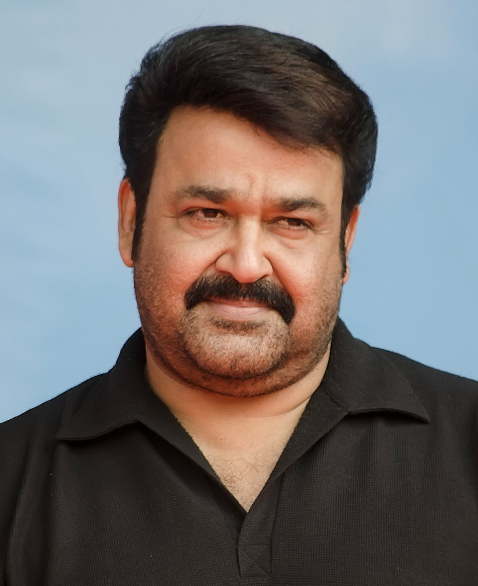

Face Morphing using OpenCV and MediaPipe Face Mesh
Two face images are processed through facial landmark detection, alignment, Delaunay triangulation, affine warping and blending to generate intermediate facial morphs.

Greater contribution from Face 1
Balanced intermediate morph
Greater contribution from Face 2
Two face images are provided as input to the system.
MediaPipe Face Mesh detects 468 facial landmark points from the input faces.
Stable facial landmarks are used to automatically align the second face with the first face.
Boundary points are added around the image to support complete Delaunay triangulation.
Corresponding landmark points are divided into triangles for geometric transformation.
Each corresponding triangle is warped toward an intermediate facial geometry.
The warped face images are blended according to the selected morph strength.
The system produces different morph levels including 25%, 50% and 75%.
Morph strength controls the contribution of each input face in the final blended result.
More influence from Face 1
Balanced intermediate morph
More influence from Face 2
FaceMorph-OpenCV detects facial landmarks on two faces, aligns their facial geometry, divides the faces into corresponding triangles, warps the triangles toward an intermediate shape and blends the transformed images to create a smooth facial morph.